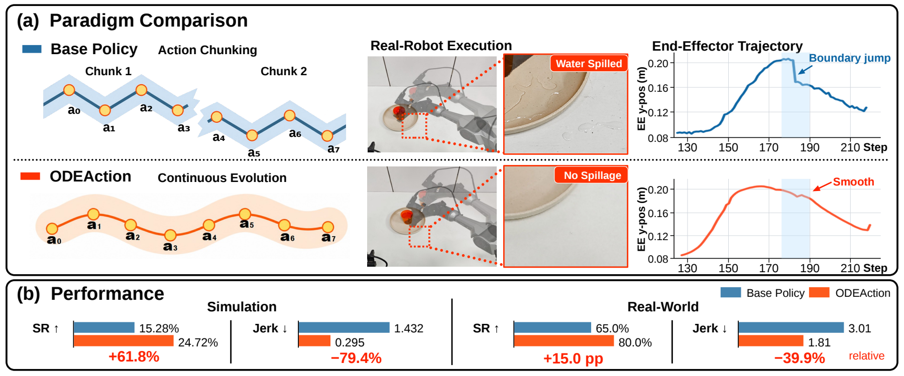

01 Idea
Change the unit of action generation.
Vision-language-action models commonly generate a whole sequence of future actions in one prediction. The robot executes this action chunk, then switches to a newly predicted one. The next chunk can start with a different motion trend, producing an abrupt change at the boundary.
ODEAction makes the current action and its evolution rate the basis of generation. Conditioned on the scene, instruction, and robot state, it predicts how the current action should change. Integrating that rate produces the next action, which becomes the starting point for the next step. This is the shift from predicting future chunks to Continuous Action Evolution.
02 Method
Learn an action transition field.
The model behind this evolution is an Action Transition Field: given an action, an evolution time, and task conditioning, it outputs an action-sized vector that describes the rate of change. Demonstrations supply the directions to learn; an ODE turns the learned directions into an action sequence.
The method follows three steps, illustrated in Figure 2. First, we construct a target field from discrete demonstrations and their neighborhoods (a). Next, the action head learns this field through direct supervision, conditioned on the visual observations, instruction, and robot state (b). At execution time, ODE integration recursively generates subsequent actions from the current action (c). We first explain how the target directions are constructed, then how they are learned and used.
From demonstrated actions to local directions.
We interpolate the discrete demonstrated actions into a continuous path γ(τ). Its tangent gives the demonstrated rate of progression. Around this path, we sample nearby actions and add a correction toward the corresponding demonstrated action. The resulting target vector combines progression along the demonstration with recovery from a deviation.
This extends supervision from the path itself to its neighborhood. When an action drifts during recursive generation, the field still provides a direction that advances the motion while bringing it back toward the demonstration. Move the query action below to see the two components combine.
An action, two components, one direction
Target Action Transition Field · F*
Learn the field through direct supervision.
The target field now supplies a direction at each sampled action and evolution time. The next step is to learn to predict that direction under the task’s visual, language, and robot-state conditioning. The action head receives these conditions together with the query action and evolution time, and minimizes the difference between its predicted vector and the target vector.
This is the direct field-learning step in Figure 2(b). Demonstrations and nearby query actions together teach the model how actions should evolve, both on and around the demonstrated path.
Generate actions through recursive integration.
Once the conditional field is learned, generation begins from the current action. Each ODE integration step queries the field for an evolution rate, uses that rate to update the action, and takes the new action as the starting point of the next step. These dependencies carry the generation forward through the sequence.
When a new visual observation arrives, the model updates its conditioning and continues from the current action. Implemented as an action head, ODEAction can bring this generation process to different vision-language backbones. The experiments below examine its effect on task success and motion quality across benchmarks and robots.
Recursive action evolution
aₙ₊₁ = aₙ + Δτ Fθ(aₙ, τₙ | c)Learned Action Transition Field · Fθ
03 Experiments
We first compare continuous action evolution with action chunking on LIBERO and EBench, and examine how improved boundary continuity relates to task success. We then test a different backbone on RoboTwin, compare against action-chunk continuation methods, and finally evaluate the same generation principle on real robots.
Success rate measures task completion. Four complementary trajectory metrics describe the motion: NLDLJ for time-domain smoothness, NSPARC for frequency-domain smoothness, EE-MAJ for end-effector mean absolute jerk, and Boundary Jump for action changes at transitions. Across these benchmarks, ODEAction produces smoother motion and more continuous action transitions, improving trajectory quality.
Comparison with action chunking
With π₀.₅ as the base policy, we compare the two generation paradigms across tabletop tasks in LIBERO and fine manipulation in EBench. Together, they show how the change in generation behaves both when task success is already high and when precise motion remains challenging.
Boundary continuity and task success
The improvements above raise a further question: do tasks with a larger reduction in boundary jumps also gain more in success rate? Boundary Discontinuity Reduction (BDR) measures the relative decrease in Boundary Jump from the base policy. In Figure 3, the ten evaluation units are ranked by BDR, and their success-rate gains are shown in the same order.
All six EBench tasks precede the four LIBERO suites in this ranking. Across the ten units, greater reductions in boundary discontinuity tend to accompany larger success-rate gains, with a Spearman correlation of 0.939. The two views connect improvements in generated motion with improvements in task execution.
Generality of the generation paradigm
The next question is whether these gains extend beyond the original backbone and task setting. We replace the action head of StarVLA-OFT and evaluate all 50 RoboTwin tasks, covering bimanual manipulation under both Clean and Random settings.
Comparison with action-chunk continuation methods
Having tested a different backbone, we next compare against methods that explicitly connect action chunks. RTC constrains new chunks during inference; Legato learns cross-chunk continuation during training. On five RoboTwin tasks with StarVLA-π, we compare the base policy, RTC, Legato, and ODEAction.
RTC and Legato reduce boundary jumps, while their average success rates fall below the base policy. ODEAction raises average success to 84.4% and achieves the best values across all four trajectory metrics. Modeling the evolution rate therefore improves task completion, motion smoothness, and trajectory continuity together.
Real-robot experiments
Finally, we bring the comparison to the AgileX Cobot Magic 1.0 platform, using π₀.₅ as the base policy. The tasks cover pick-and-place, opening a drawer, carrying a water-filled cup, and inserting a spoon. Each task has 100 demonstration trajectories, and each method is evaluated over 20 trials per task.
ODEAction reaches 80% average success. Compared with the base policy, task success and all four trajectory-quality metrics improve. The task images and quantitative results below connect the generation paradigm to its behavior during physical execution.
Deviation and recovery during recursive evolution
The results lead back to the two ingredients of the target field. Neighborhood supervision provides directions beyond the demonstration path, while correction brings deviating actions back toward it. The three views below follow the same path and receive the same displacement, making the role of each ingredient visible.
Without neighborhood
Supervision follows the demonstrated path.
Without correction
Progression continues; the offset remains.
ODEAction
Progression and correction recover the path.
In the five-task ablation, removing neighborhood supervision or correction reduces success to 47.4% or 56.2%, respectively. The full ODEAction reaches 84.4%. Together, the neighborhood and correction support continued generation after the action departs from the demonstration.
Table 4 · Five-task ablation
Task success (%) ↑
From future segments to action dynamics.
ODEAction learns a conditional evolution rate and uses it to generate actions recursively. Across backbones, tasks, and robot platforms, this change in generation improves both what the robot completes and how it moves.
Explore the full paper ↗